| Clase |
Descripción |
Especializaciones |
Icono |
| Guerrero |
Los guerreros se equipan con cuidado para el combate y se enfrentan a sus enemigos de frente,dejando
que
los ataques resbalen contra su pesada armadura.Usan diversas tácticas de combate y una gran variedad
de
tipos de armas para proteger a los combatientes menos hábiles.Los guerreros deben controlar
cuidadosamente su ira(el poder detrás de sus ataques más fuertes) para maximizar su efectividad en
el
combate. |
|
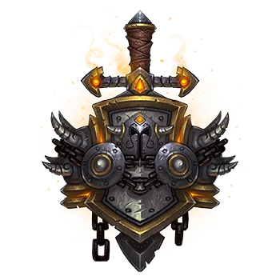 |
| Cazador |
Los cazadores luchan contra sus enemigos a distancia o de cerca y ordenan a sus mascotas que ataquen
mientras preparan sus flechas, disparan sus armas de fuego o blanden sus armas de asta. Si bien sus
armas son efectivas a corta y larga distancia, los cazadores son también extremadamente ágiles. Son
capaces de evadir o entorpecer a sus enemigos para controlar el espacio de combate |
- Bestias
- Punteria
- Supervivencia
|
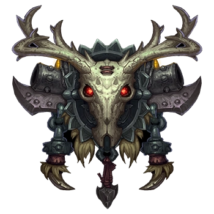 |
| Mago |
Los magos destruyen a sus enemigos con encantamientos arcanos. Aunque controlan poderosos hechizos
ofensivos, los magos son frágiles y su armadura es ligera, lo que los hace particularmente
vulnerables a
los ataques a corta distancia. Los magos sabios usan sus hechizos con cuidado para mantener a sus
enemigos a distancia o retenerlos en el lugar. |
|
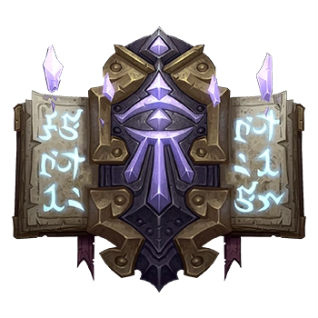 |
| Picaro |
Los pícaros a menudo inician sus batallas entre las sombras, comenzando con sanguinarios golpes
cuerpo a
cuerpo. En batallas largas, usan ataques sucesivos, cuidadosamente seleccionados para preparar al
enemigo para el golpe final. Los pícaros deben tener especial cuidado al seleccionar a sus objetivos
para no malgastar sus ataques de combo y deben saber cuándo esconderse o huir si la batalla se
vuelve
contra ellos. |
- Asesinato
- Forajido
- Sutileza
|
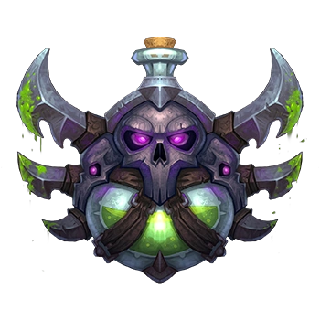 |
| Sacerdote |
Los sacerdotes usan poderosa magia de sanación para asegurarse de que tanto ellos como sus
compañeros no
son derribados. También controlan poderosos hechizos ofensivos a distancia, pero pueden verse
sobrepasados por los enemigos debido a su fragilidad física y a su ligera armadura. Los sacerdotes
más
experimentados combinan el uso de sus hechizos ofensivos y de control con la importancia de mantener
vivo al resto del grupo. |
- Disciplina
- Sagrado
- Sombra
|
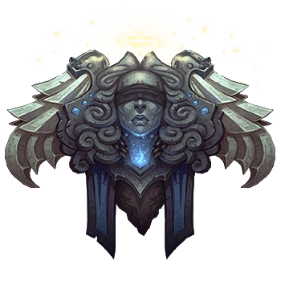 |
| Brujo |
Los brujos incineran y destruyen a los enemigos debilitados con una combinación de atroces
enfermedades
y magia oscura. Mientras que sus mascotas les protegen y mejoran, los brujos golpean a los enemigos
desde la distancia. Ya que son taumaturgos físicamente débiles desprovistos de una poderosa
armadura,
los brujos astutos dejan que sus esbirros se lleven el grueso de los ataques enemigos para salvar su
propio pellejo. |
- Aflicción
- Demonología
- Destrucción
|
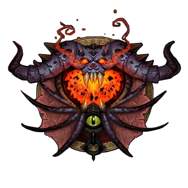 |
| Paladin |
Los paladines se colocan justo delante de sus enemigos, confiando en su pesada armadura y la
sanación
para poder sobrevivir a una lluvia de ataques. Ya sea con enormes escudos o con aplastantes armas a
dos
manos, los paladines pueden aguantar zarpas y espadas de sus compañeros más débiles, pero deben usar
la
magia sanadora con cuidado para asegurarse de que se mantienen en pie. |
- Sagrado
- Protección
- Represión
|
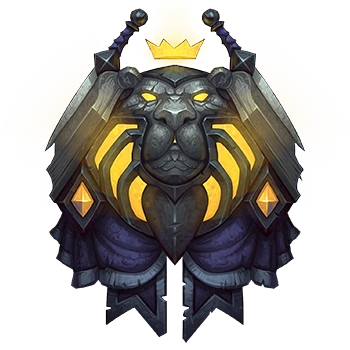 |
| Druida |
Los druidas poseen una gran variedad de estilos de combate. Pueden llevar a cabo todos los roles:
sanación, tanque, daño cuerpo a cuerpo y daño a distancia. Es vital que los druidas adopten la forma
adecuada para cada situación ya que cada forma conlleva un propósito diferente. |
- Equilibrio
- Feral
- Guardián
- Restauración
|
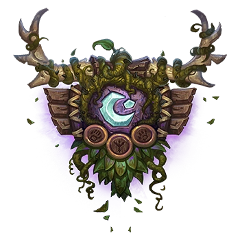 |
| Chamán |
Durante el combate, el chamán coloca totems de control y daño en el suelo para maximizar su
efectividad
y ponerle las cosas más difíciles a los enemigos Los chamanes son lo suficientemente versátiles para
luchar contra los enemigos de cerca o a distancia, pero los chamanes sabios eligen su camino de
ataque
basado en los puntos fuertes y débiles de sus enemigos. |
- Elemental
- Mejora
- Restauración
|
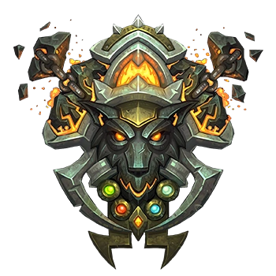 |
| Monje |
Sea cual sea el papel que desempeñen en el combate, los monjes suelen centrarse en sus pies y manos
para
las acciones principales, mientras que su fuerte conexión con su chi interno les vale para potenciar
sus
facultades. Además, los monjes son capaces de sanar a sus aliados al tiempo que infligen daño a sus
enemigos. |
- Maestro Cervecero
- Tejedor de Niebla
- Viajero del Viento
|
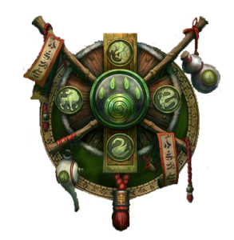 |
| Cazador de Demonios |
Los cazadores de demonios sacrifican la armadura pesada para ganar velocidad, lo que les permite
recortar distancias rápidamente y mutilar a sus enemigos con armas de una mano. No obstante, los
Illidari también deben aprovechar su agilidad en aras de la defensa para asegurar la victoria. |
|
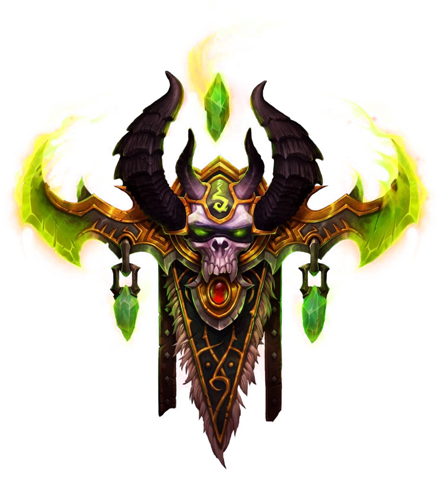 |
| Caballero de la Muerte |
Los caballeros de la Muerte se enfrentan a sus enemigos de cerca, asestando golpes con sus armas con
magia oscura que vuelve a los enemigos vulnerables o les inflige daño con poder oscuro. Arrastran a
los
enemigos a enfrentamientos uno contra uno, obligándoles a concentrar sus ataques lejos de sus
compañeros
más débiles. Para evitar que sus enemigos escapen de sus garras, los caballeros de la Muerte deben
ser
conscientes del poder que invocan de las runas y controlar sus ataques de forma apropiada. |
|
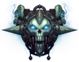 |